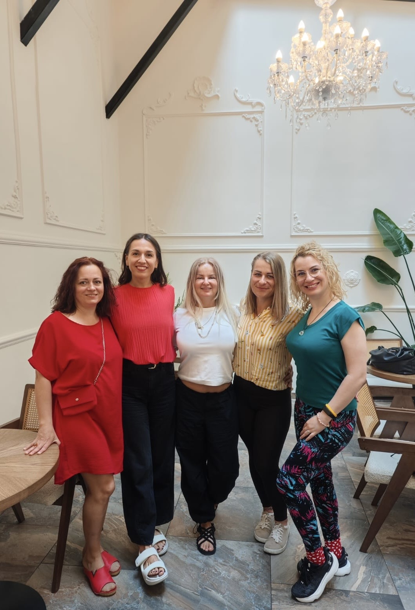

The Full Return je skupinový rozvojový program pre ženy, ktoré sa vracajú do práce — a pre firmy, ktorým na nich záleží.
Mám záujem o program
The Full Return kombinuje tri veci naraz: Gallup CliftonStrengths prácu so silnými stránkami, hlbokú prácu s identitou pracujúcej mamy a skupinovú dynamiku žien, ktoré prechádzajú tým istým.
Vedie ho niekto, kto si tým všetkým prešiel osobne. Som Nikoleta — L&D konzultantka, Gallup certifikovaná koučka a mama, ktorej sa po materskej zmenilo všetko.
Program nie je náhradou psychologickej ani psychiatrickej starostlivosti.
Väčšina firiem rieši návrat z materskej administratívne. Zmluva, laptop, prístup do systémov. Hotovo.
Žena, ktorá sa vrátila, však rieši niečo úplne iné. Pochybuje o sebe. Cíti sa odtrhnutá od tímu. Bojí sa, že nestíha, že ju ostatní predbehli. Mlčí namiesto toho, aby komunikovala, čo potrebuje.
A čísla to potvrdzujú:
93 % českých matiek by si pri materskej chcelo pracovať — reálne to dokáže len 52 % z nich.
Zdroj: Mumdoo, 2024
30 % Češiek po materskej prechádza na podnikanie — oproti 10 % pred odchodom. Flexibilitu, ktorú im zamestnávateľ nedal, si zariaďujú samy.
Zdroj: Mumdoo + Deloitte, 2023
52 % Sloveniek po materskej mení zamestnávateľa — najčastejšie pre nedostatok podpory a flexibility.
Zdroj: OZ Akčné ženy, 2025
61 % matiek uvádza úzkosti, vyhorenie alebo depresiu pri návrate do práce.
Zdroj: OZ Akčné ženy, 2025
Takmer 1/3 Sloveniek zarába po návrate menej než pred materskou.
Zdroj: 365.bank, 2025
Nie preto, že nechcú pracovať. Ale preto, že nedostali podporu, ktorú potrebovali — v čase, keď to bolo najdôležitejšie.
7 mesiacov, 6 žien, jedno stretnutie mesačne (3 hodiny, online, Google Meet) + cca 2 hodiny individuálnej integrácie po každom stretnutí. Kapacita: 6 miest.
Presný termín ďalšieho behu oznámim čoskoro. Napíšte mi — dám vám vedieť ako prvej, keď otvorím prihlasovanie, a pomôžem vám zvážiť, či to pre vašu firmu dáva zmysel práve teraz.
Kde som teraz a čo potrebujem. Vstupný dotazník pre ženu aj manažéra — očakávania zarovnané od prvého dňa.
Kto som teraz — v práci aj sama pre seba. Osobný kontrakt a hranice medzi profesionálnou a materskou rolou.
↓ Individuálna Gallup CliftonStrengths konzultácia — Top 10
Skupinová práca nadväzuje na individuálny Gallup debrief. Nie teória — ako fungujú talenty v novom kontexte po materskej a ako ich vedome využívať v práci.
Vina, strach, porovnávanie, preťaženie. Pomenovanie, pochopenie, nástroje. Nie terapia — praktická práca s tým, čo ženy skutočne cítia.
Ako nastaviť hranice v pracovnom prostredí. Konkrétne skripty na rozhovory s manažérom a tímom — ako komunikovať potreby, limity a zmeny v dostupnosti.
Hodnoty, smer, ciele na 1–3 roky. Realistické, nie utopické.
Rituál ukončenia. Zdieľanie. Networking. A plán na to, čo príde potom. Prezenčne — Brno alebo Bratislava.
↓ Záverečná individuálna Gallup konzultácia — práca so slabými stránkami
DÔVERNOSŤ & ZDIEĽANIE VÝSTUPOV
Skupina funguje na princípe dôvernosti — čo sa povie v programe, zostáva v programe. Každá účastníčka podpisuje dohodu o dôvernosti pred začiatkom. HR alebo priamy manažér dostane spätnú väzbu o posune len v rozsahu, ktorý žena vopred odsúhlasí. Nie monitoring — podpora.
Program možno fakturovať firme aj hradiť individuálne.
Podrobné platobné podmienky a storno politika sú súčasťou zmluvy.
Za 30 minút zistíme, či to dáva zmysel pre váš tím.
Dohodnime si callNavrhni program svojej firme. Klikni a dostaneš krátky email, ktorý môžeš priamo preposlať svojej HR alebo manažérke.
Pošli to HR →